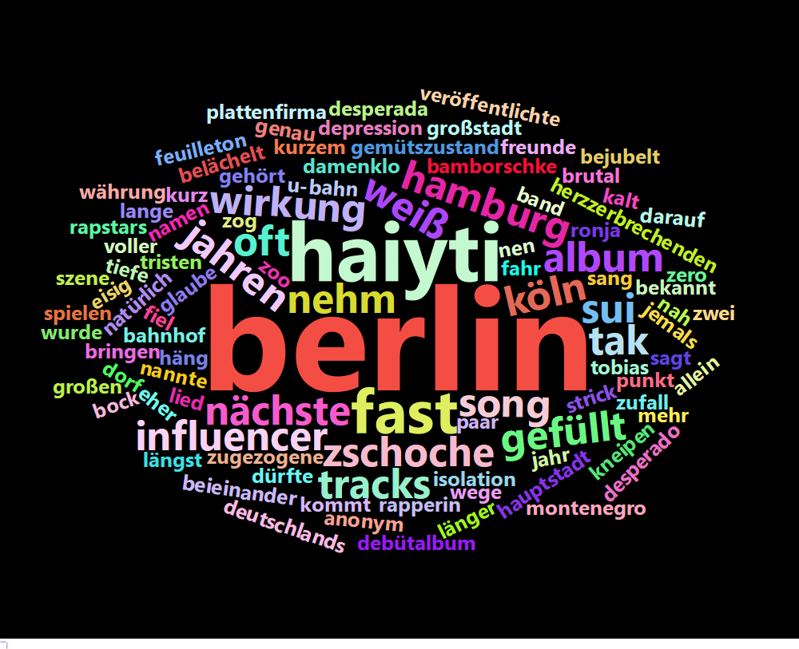

Syntax 2022 Introduction Course
2021-10-03
Kapitel 1 Einführung

In diesem Einführungskurs machen wir Sie mit quantitativen Methoden zur Erfassung von linguistischen Merkmalen in deutschen, englischen und slowenischen Texten bekannt.
Unseren Kurs beginnen wir mit wichtigen Grundlagen für die Verwendung
der Benutzeroberfläche RStudio und die Manipulation von Dateien und
Datensätzen. Neben einigen Base-R-Funktionen lernen wir vor allem, mit
den Funktionen des Programmbündels tidyverse umzugehen.
In mehreren Kurseinheiten beschäftigen wir uns mit kleineren Datensätzen aus dem Bereich Sprachverwendung und einigen grundlegenden statistischen Testmethoden.
In einer Kurseinheit vergleichen wir Ermittlungsfunktionen in R und
Microsoft Excel, einem beliebten Tabellenprogramm.
Das Thema mehrerer Kurseinheiten ist die Zerlegung von Texten in kleinere Einheiten und ihre Bearbeitung auf verschiedenen linguistischen Ebenen: auf phonetischer, graphematischer, morphologischer und syntaktischer Ebene.1